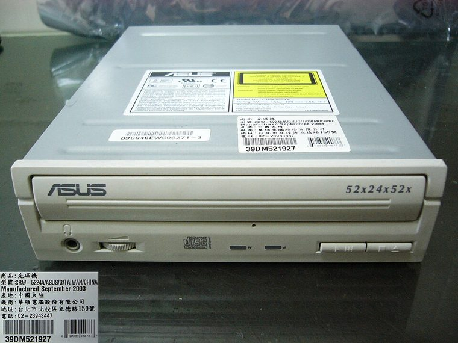
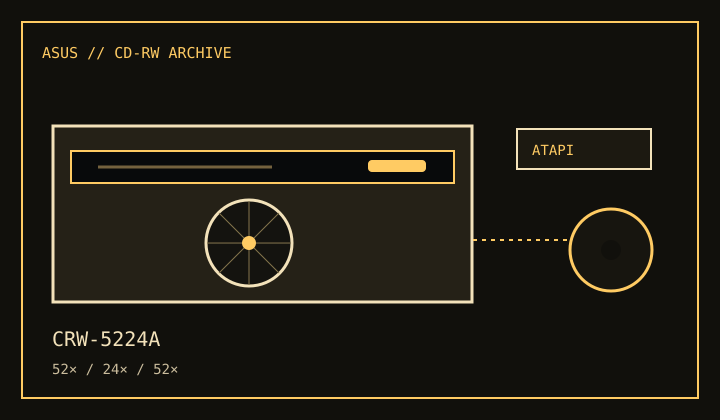

[ CD-R AND CD-RW DRIVES // IDENTIFIED MODEL ]
ASUS CRW-5224A
Internal ATAPI CD recorder with maximum speeds of 52× CD-R writing, 24× CD-RW rewriting and 52× CD reading.


IDENTIFICATION: Match the CRW-5224A label and manual; similar ASUS writers can use different recording speeds, firmware or board revisions.
Documented specifications
| Exact model | ASUS CRW-5224A |
|---|---|
| CD-R write | Up to 52× |
| CD-RW rewrite | Up to 24× |
| CD read | Up to 52× |
| Supported media | Writes CD-R and CD-RW; reads CD-ROM, CD-DA and supported recordable discs. Other CD formats depend on disc authoring and playback software. |
| Interface / bay | Internal IDE/ATAPI interface in a 5.25-inch half-height bay. |
| Host compatibility | Requires an IDE/ATAPI host and compatible CD recording software. Use the ASUS manual's OS, DMA and cable instructions; a present-day operating system may read discs without supporting period recording utilities. |
| Firmware / jumper | Firmware must match CRW-5224A and the installed revision/OEM variant. Set the drive's Master/Slave/Cable Select jumper according to the manual and host-channel arrangement. |
Compatibility and preservation
- Use blank media supported by the recorder and software; maximum write speed is not assured for every disc.
- Document the model suffix, firmware, host controller, jumper setting, media and burn-verification errors.
- Preserve checksummed disc images and logs; avoid firmware images intended for another ASUS model.
Manufacturer and manual references
- ASUS CRW-5224A official user manual (PDF)ASUS-hosted product manual for specifications, installation and media support.
- ASUS CRW-5224A official manual/support pageManufacturer support page for model-specific documentation.